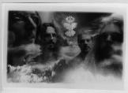

| Artist: | Friction |
| Title: | Glow Within |
| Label: | FutureMusic |
| Length(s): | 45 minutes |
| Year(s) of release: | 1996 |
| Month of review: | 03/1997 |
| 1) | Daredevil | 5.54 |
| 2) | Glow Within | 6.38 |
| 3) | Insane | 8.51 |
| 4) | Somersault | 4.47 |
| 5) | Walking Boots | 4.38 |
| 6) | Window | 3.30 |
| 7) | Dancing Melody Girl | 10.50 |
A very good track is the title track that is based on organ, acoustic guitar and whining singing (compare to Neil Young), but in the middle it turns into a high energy orgy of organ, drums, guitar and loud vocals. After a number of seconds of this however the song turns very bluesy, with an organ in the back and a crying electric guitar in the fore. Then the sad whining singing from the beginning returns. In the end the orgastic part returns. The drumming is very nice on this one, very driving and also that rather experimental, say ELPish, keyboardsolo is also very welcome. A very memorable track.
The next track reminds me at first a lot of Hendrix, but lyrical and musical references are also made to House of Pain and more importantly Cypress Hill: Insane in the Membrane as the guys of Friction repeat here. This song is not so melodic as the previous ones and one would do good to think of early seventies improvised heavy organ dosed rock.
Somersault, Walking Boots and Window are more of the same: heavy guitars, organ solo's, powerful vocals and for this line of music high variation and also a high energy level with a strong early seventies psychedelic feel to it, but wih an updated sound.
The closer DMG is the longest track on the album. This song starts out somewhat in the reggaestyle, a relaxed guitar with some organ, but later on the band blows away again like in any of the previous songs.